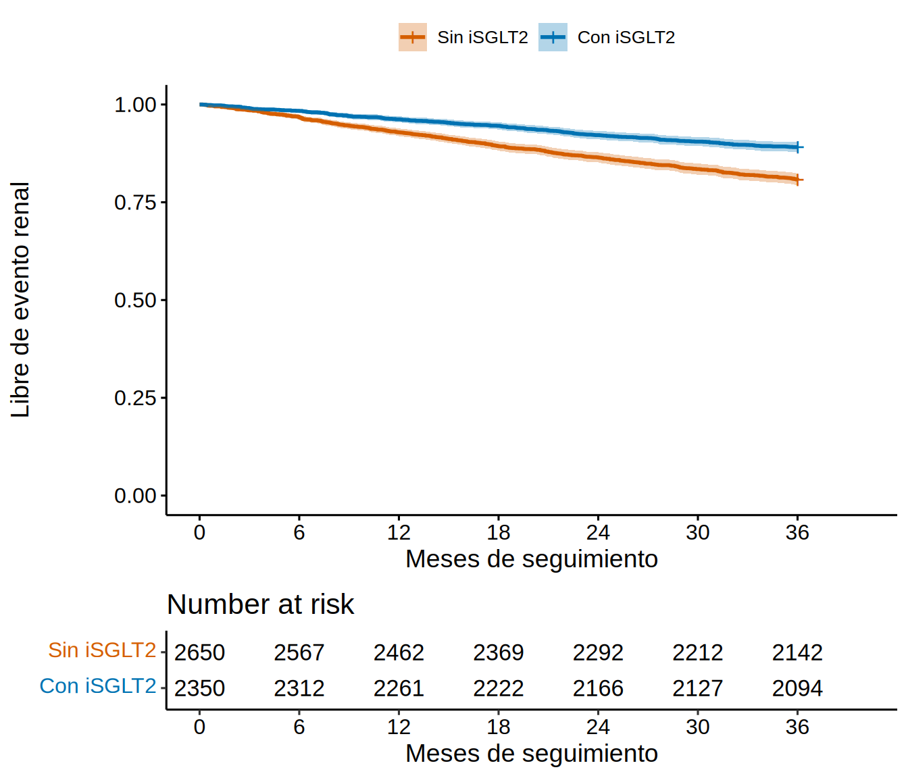
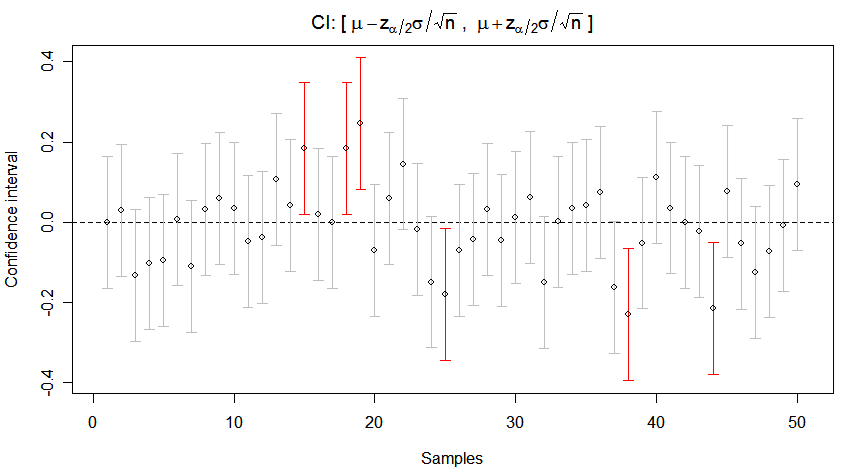

Medidas de asociación
Las medidas de asociación comparan la frecuencia de un desenlace entre dos grupos (expuestos vs. no expuestos, tratados vs. controles). Responden a: ¿cuántas veces más (o menos) frecuente es el desenlace en un grupo que en otro?
| Medida | Compara… | Diseño típico | Valor nulo | Función en R |
|---|---|---|---|---|
| RP (razón de prevalencias) | Prevalencias | Transversal | 1 |
glm(family = poisson) con IC robusto, o 2×2 |
| RR (riesgo relativo) | Incidencias acumuladas | Cohorte, ECA | 1 | 2×2, glm(family = poisson) con IC robusto |
| RTI (razón de tasas de incidencia) | Tasas con persona-tiempo | Cohorte con seguimiento desigual | 1 |
poisson.test(), glm(family = poisson, offset = log(pt))
|
| OR (odds ratio) | Odds de evento (o de exposición) | Casos y controles; regresión logística | 1 | glm(family = binomial) |
| HR (hazard ratio) | Riesgo instantáneo en el tiempo | Análisis de supervivencia | 1 | survival::coxph() |
Todas valen 1 cuando no hay asociación. Si la medida es > 1, el desenlace es más frecuente en el grupo expuesto; si es < 1, menos frecuente.
En todo el capítulo usaremos la base simulada ckd_isglt2.csv (adultos con ERC y diabetes tipo 2; ver Capítulo 3.2) y nos preguntaremos:
En adultos con ERC (G3-G4) y DM2 (P), ¿los que inician un iSGLT2 (I), comparados con los que no (C), tienen menos eventos renales (TFGe −40 %, diálisis o trasplante) a 36 meses (O)?
Aquí solo cuantificamos asociaciones. Que un iSGLT2 se asocie con menos eventos no demuestra que los evite: en la práctica los pacientes que reciben el fármaco difieren de los que no (edad, TFGe, fragilidad…). Convertir una asociación en un efecto causal es el tema de la Parte 3.
Razón de prevalencias (RP)
Qué compara: la prevalencia de una condición en expuestos vs. no expuestos, medida en un único momento (estudio transversal).
\[ \text{RP} = \frac{\text{Prevalencia en expuestos}}{\text{Prevalencia en no expuestos}} \]
En 400 pacientes con ERC se midió el potasio en la consulta: 200 usaban IECA/ARA-II y 200 no. Hubo hiperpotasemia (K⁺ ≥ 5.5 mEq/L) en 36 de los que usaban IECA/ARA-II y en 14 de los que no.
# a b c d
medidas_2x2(a = 36, b = 164, c = 14, d = 186)# A tibble: 5 × 4
medida estimado ic_inf ic_sup
<chr> <dbl> <dbl> <dbl>
1 Proporción en expuestos 0.18 NA NA
2 Proporción en no expuestos 0.07 NA NA
3 Diferencia (RD) 0.11 0.0461 0.174
4 Razón de proporciones (RR o RP) 2.57 1.43 4.62
5 Odds ratio (OR) 2.92 1.52 5.60 La prevalencia fue 18 % vs. 7 %: RP = 2.57 (IC 95 % 1.43–4.62). “La prevalencia de hiperpotasemia fue 2.6 veces mayor entre quienes usaban IECA/ARA-II.”
- Con desenlaces comunes, la RP (o el RR) es más fácil de interpretar que el OR; evita reportar OR si puedes calcular RP/RR.
- En un transversal no sabes qué ocurrió primero: un paciente con hiperpotasemia pudo suspender el IECA, lo que enmascara la asociación real (causalidad inversa).
Riesgo relativo (RR)
Qué compara: la incidencia acumulada (riesgo) del evento en dos grupos seguidos durante el mismo periodo.
\[ \text{RR} = \frac{\text{Riesgo en expuestos}}{\text{Riesgo en no expuestos}} \]
tabla <- table(grupo = ckd$grupo, evento = ckd$evento)
tabla evento
grupo 0 1
Sin iSGLT2 2141 509
Con iSGLT2 2094 256# Orden: a = expuestos con evento, b = expuestos sin evento, c y d = no expuestos
res_rr <- medidas_2x2(
a = tabla["Con iSGLT2", "1"], b = tabla["Con iSGLT2", "0"],
c = tabla["Sin iSGLT2", "1"], d = tabla["Sin iSGLT2", "0"]
)
res_rr# A tibble: 5 × 4
medida estimado ic_inf ic_sup
<chr> <dbl> <dbl> <dbl>
1 Proporción en expuestos 0.109 NA NA
2 Proporción en no expuestos 0.192 NA NA
3 Diferencia (RD) -0.0831 -0.103 -0.0636
4 Razón de proporciones (RR o RP) 0.567 0.493 0.652
5 Odds ratio (OR) 0.514 0.437 0.605 El riesgo a 36 meses fue 10.9% con iSGLT2 y 19.2% sin iSGLT2:
- RR = 0.57 (IC 95 % 0.49–0.65).
- Diferencia de riesgos = -8.3 puntos porcentuales.
¿Cómo se interpreta?
| Resultado | Cómo decirlo |
|---|---|
| RR = 1 | El riesgo fue igual en ambos grupos |
| RR = 0.57 | El riesgo fue 43 % menor (1 − 0.57) con iSGLT2 |
| RR = 1.50 | El riesgo fue 50 % mayor (1.50 − 1) |
| RR = 3 | El riesgo fue 3 veces el del grupo de referencia (o 200 % mayor) |
“3 veces mayor” (RR = 3) no es lo mismo que “3 % mayor” ni que “30 % mayor”. Para evitar confusiones, escribe siempre las dos cifras absolutas junto al RR: “19.2 % vs. 10.9 %”.
Razón de tasas de incidencia (RTI)
Qué compara: dos tasas (casos por persona-tiempo). Es la medida adecuada cuando el seguimiento difiere entre pacientes (fallecimientos, pérdidas, ingreso escalonado).
\[ \text{RTI} = \frac{\text{Tasa de incidencia en expuestos}}{\text{Tasa de incidencia en no expuestos}} \]
# A tibble: 2 × 4
grupo eventos persona_anios tasa_100pa
<fct> <dbl> <dbl> <dbl>
1 Sin iSGLT2 509 7146. 7.12
2 Con iSGLT2 256 6650. 3.85# RTI con IC 95 % (método de Wald en escala log)
exp_g <- pt |> filter(grupo == "Con iSGLT2"); ctl <- pt |> filter(grupo == "Sin iSGLT2")
rti <- exp_g$tasa_100pa / ctl$tasa_100pa
se_log <- sqrt(1 / exp_g$eventos + 1 / ctl$eventos)
tibble(RTI = rti, ic_inf = exp(log(rti) - 1.96 * se_log), ic_sup = exp(log(rti) + 1.96 * se_log))# A tibble: 1 × 3
RTI ic_inf ic_sup
<dbl> <dbl> <dbl>
1 0.540 0.465 0.628RTI = 0.54: la velocidad de aparición del evento renal fue 46 % menor con iSGLT2.
Cuando el evento es poco frecuente, el seguimiento es similar entre grupos y casi no hay censura. Aquí el evento ocurre en ~15 % y los valores difieren ligeramente: ese es el costo de usar riesgos acumulados vs. tasas.
Odds ratio (OR)
Qué compara: los odds de un evento entre grupos. Un odds es la probabilidad de que ocurra dividida entre la de que no ocurra:
\[ \text{odds} = \frac{p}{1 - p} \qquad\qquad \text{OR} = \frac{\text{odds en expuestos}}{\text{odds en no expuestos}} \]
Si la probabilidad de un evento es 0.2, el odds es 0.2/0.8 = 0.25 (una oportunidad contra cuatro).
¿El uso reciente de AINE se asocia con lesión renal aguda (LRA) hospitalaria? Se incluyeron 100 casos de LRA y 200 controles hospitalizados sin LRA: 40 casos y 30 controles habían usado AINE en la semana previa.
# a b c d
medidas_2x2(a = 40, b = 60, c = 30, d = 170)# A tibble: 5 × 4
medida estimado ic_inf ic_sup
<chr> <dbl> <dbl> <dbl>
1 Proporción en expuestos 0.4 NA NA
2 Proporción en no expuestos 0.15 NA NA
3 Diferencia (RD) 0.25 0.142 0.358
4 Razón de proporciones (RR o RP) 2.67 1.77 4.01
5 Odds ratio (OR) 3.78 2.16 6.60 En un diseño de casos y controles, solo el OR es válido (los “riesgos” que aparecen en la tabla dependen de cuántos controles decidiste incluir, no de la realidad). OR = 3.78 (IC 95 % 2.16–6.60): “Los casos tuvieron 3.8 veces los odds de haber usado AINE que los controles”.
El OR exagera cuando el evento es común
Con desenlaces raros (< 10 %), OR ≈ RR. Con desenlaces frecuentes, el OR se aleja de 1 más que el RR:
curva <- expand_grid(riesgo_basal = seq(0.01, 0.9, by = 0.01), rr = c(0.5, 2)) |>
filter(rr * riesgo_basal < 1) |> # el riesgo expuesto no puede superar 1
mutate(or = (rr * riesgo_basal / (1 - rr * riesgo_basal)) / (riesgo_basal / (1 - riesgo_basal)),
rr = factor(rr, levels = c(0.5, 2), labels = c("RR = 0.5", "RR = 2")))
curva |>
ggplot(aes(riesgo_basal, or, color = rr)) +
geom_line(linewidth = 1.1) +
geom_hline(yintercept = c(0.5, 2), linetype = "dotted") +
scale_y_log10() +
labs(x = "Riesgo en el grupo no expuesto", y = "OR (escala log)", color = NULL) +
theme_minimal(base_size = 13)
Si tienes una cohorte o un ECA, reporta RR (y la diferencia de riesgos). Reserva el OR para casos y controles o para cuando tu modelo (regresión logística) lo exija, y recuerda que el OR no es un riesgo.
Con la base ckd, un desenlace común (pérdida rápida de TFGe, definida como una caída mayor a 3 mL/min/1.73 m²/año) permite ver la diferencia:
ckd <- ckd |> mutate(caida_rapida = as.integer(pendiente_tfg < -3))
t2 <- table(grupo = ckd$grupo, caida = ckd$caida_rapida)
medidas_2x2(t2["Con iSGLT2", "1"], t2["Con iSGLT2", "0"],
t2["Sin iSGLT2", "1"], t2["Sin iSGLT2", "0"]) |>
filter(str_detect(medida, "RR|OR"))# A tibble: 2 × 4
medida estimado ic_inf ic_sup
<chr> <dbl> <dbl> <dbl>
1 Razón de proporciones (RR o RP) 0.227 0.198 0.261
2 Odds ratio (OR) 0.151 0.129 0.178Hazard ratio (HR)
Qué compara: el hazard (riesgo instantáneo) de presentar el evento a lo largo del tiempo, entre quienes aún no lo han presentado. Se estima con modelos de supervivencia (Cox) y se resume en un solo número si el HR es aproximadamente constante durante el seguimiento.
\[ \text{HR} = \frac{\text{hazard en expuestos}}{\text{hazard en no expuestos}} \]
Es la tasa instantánea de evento en quienes siguen libres del evento. Piénsalo como la “velocidad” con la que se acumulan los eventos en cada momento del seguimiento. No es una probabilidad (puede ser > 1) y no es lo mismo que el RR aunque a veces se parezcan.
library(survminer)
ajuste_km <- survfit(Surv(tiempo_meses, evento) ~ grupo, data = ckd)
ggsurvplot(
ajuste_km, data = ckd,
conf.int = TRUE, risk.table = TRUE, pval = FALSE,
xlab = "Meses de seguimiento", ylab = "Libre de evento renal",
legend.title = "", legend.labs = c("Sin iSGLT2", "Con iSGLT2"),
palette = c("#D55E00", "#0072B2"), break.time.by = 6
)
exp(coef) exp(-coef) lower .95 upper .95
grupoCon iSGLT2 0.5408431 1.848965 0.4654205 0.6284882HR = 0.54 (IC 95 % 0.47–0.63). Se puede decir: “En cualquier momento del seguimiento, los pacientes con iSGLT2 tuvieron en promedio 46 % menos riesgo instantáneo de evento renal”.
- “Redujo el riesgo en X %” suele ser una mala traducción de un HR: un HR es una razón de velocidades, no de proporciones de pacientes.
- Verifica la proporcionalidad de hazards (
cox.zph(cox)) antes de resumir el efecto con un único HR.
Valor p e intervalo de confianza
Además del valor puntual, siempre debes mostrar su precisión.
- Valor p: probabilidad de observar un resultado tan extremo como el obtenido (o más) si la hipótesis nula fuera cierta (p. ej., RR = 1).
- IC 95 %: rango de valores del parámetro que son compatibles con los datos y el modelo.
- No es la probabilidad de que la hipótesis nula sea cierta.
- No mide el tamaño ni la importancia clínica del efecto.
- “p < 0.05” no equivale a “efecto real” ni “p ≥ 0.05” a “no hay efecto”. Con muestras grandes cualquier diferencia mínima es “significativa”; con muestras pequeñas un efecto importante puede no serlo.

Cómo leer un IC 95 %: si el IC de un RR/OR/HR incluye 1, los datos son compatibles con ausencia de asociación; mientras más ancho el intervalo, menos preciso el estimado. Ejemplo: HR = 1.85; IC 95 % 1.15–2.96; p = 0.011 → el efecto estimado es de 85 % más hazard y los datos son compatibles con aumentos entre 15 % y 196 %.
Reporta estimado + IC 95 % + medida absoluta, y deja el valor p como complemento. Interpreta siempre el límite del IC más cercano a 1: ¿seguiría siendo clínicamente relevante?
La comparación entre inferencia frecuentista y bayesiana se desarrollará en un capítulo propio.
Referencias
Zafra-Tanaka JH, Taype-Rondan A, Fernandez-Guzman D. Cómo entender las medidas de efecto en la investigación clínica: Interpretación práctica y aplicación. Revista del Cuerpo Médico Hospital Nacional Almanzor Aguinaga Asenjo. 2023;16. https://cmhnaaa.org.pe/ojs/index.php/rcmhnaaa/article/view/1935
Hernán MA. The hazards of hazard ratios. Epidemiology. 2010;21(1):13-15.
Greenland S, Senn SJ, Rothman KJ, et al. Statistical tests, P values, confidence intervals, and power: a guide to misinterpretations. Eur J Epidemiol. 2016;31:337-350.
Nota editorial
- Esta sección fue editada con asistencia de IA (ChatGPT; revisión editorial con Claude). Los ejemplos con datos hipotéticos o simulados no corresponden a pacientes reales.